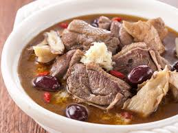

薑母鴨
薑母鴨這道美食發源於台灣，而後傳至其它地區乃至國外，是台灣一道傳統的名小吃。它既能氣血雙補，同時搭配的鴨肉有滋陰降火功效。美食中的藥膳滋而不膩，
溫而不燥，適合於秋季和冬季食用。薑母鴨自1980年代後才流行於台灣冬令進補沿襲至今的火鍋食譜，根據OpView網路調查，現已成為冬季前五大食用鍋物之一[1]。
。店家提供煮熟鴨肉（飼養6～7個月，5～6台斤的公紅面番鴨）、
老薑（閩南語薑母）、米酒、芝蔴油、中藥藥材包，共同熬煮於顧客桌上瓦斯爐、電磁爐或炭爐，食後通體暖暢，頗受歡迎。

江振誠
三杯雞
滷肉飯
心得